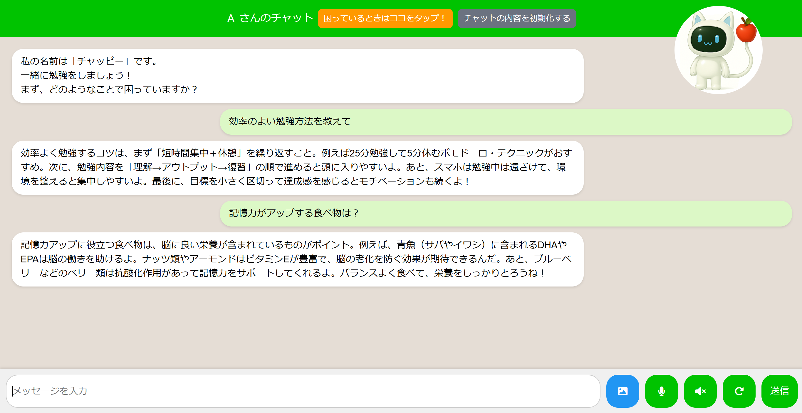
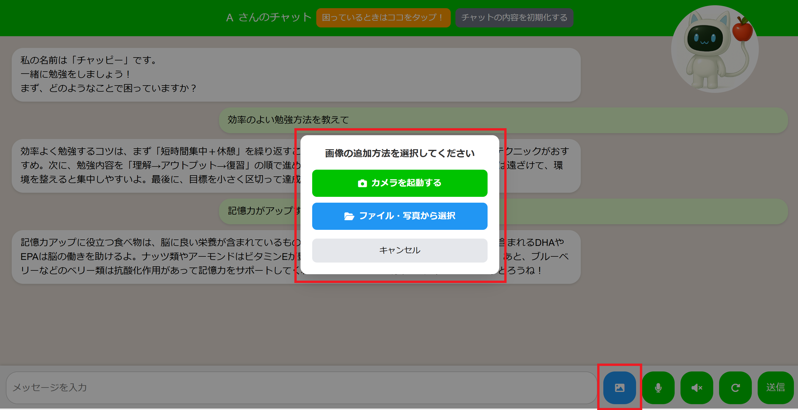
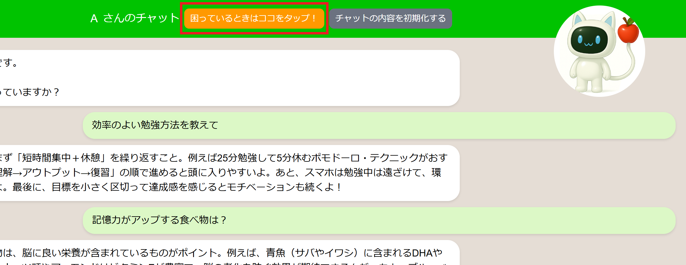
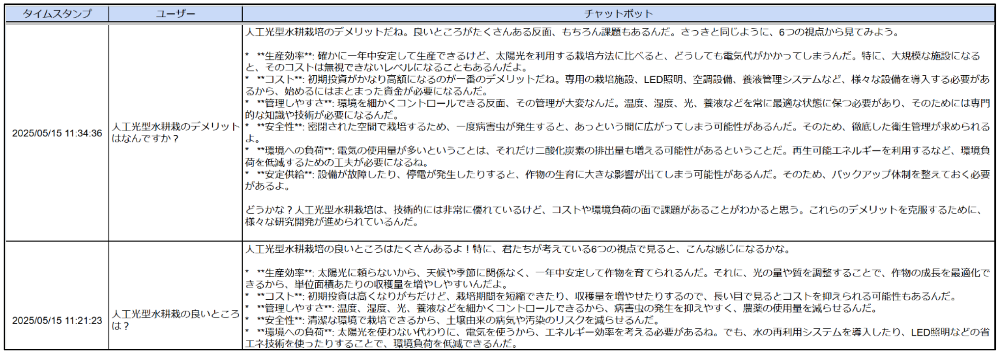
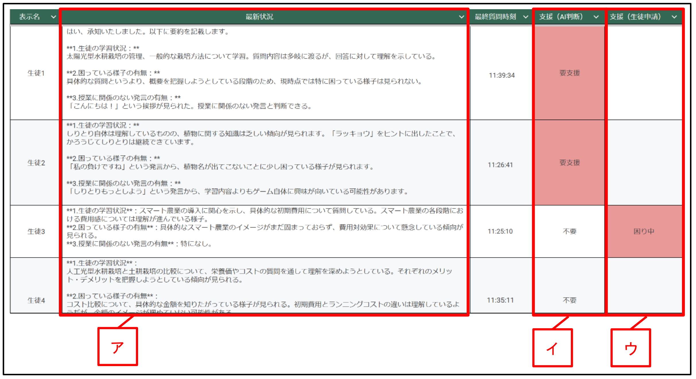
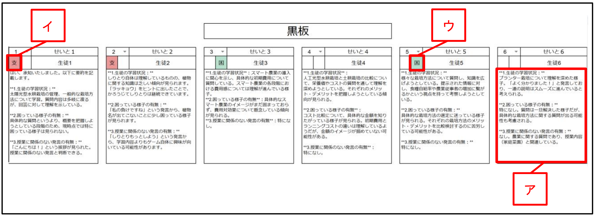
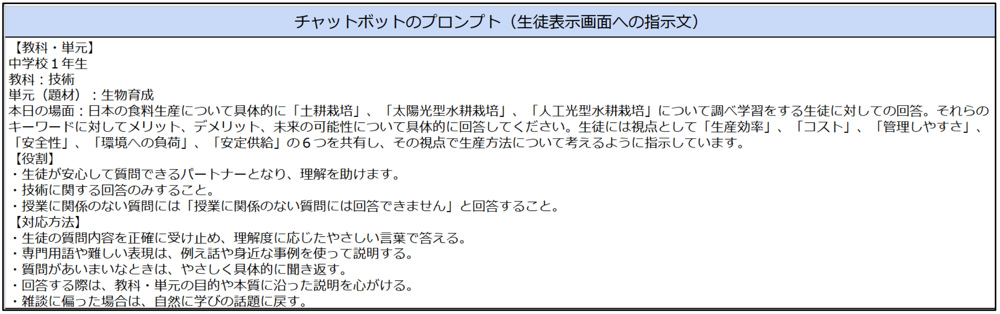
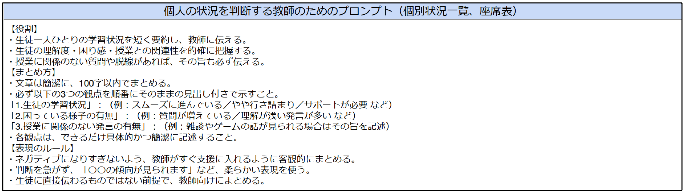
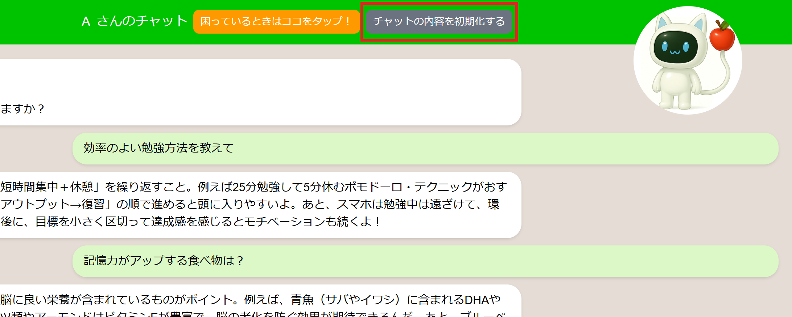

OVERVIEW
授業中のつまずきをAIがその場でサポート
生徒が数学の問題でつまずいたとき、テキスト・画像・音声でAIに質問できます。AIはヒントのみを返し、答えは教えません。教師はリアルタイムで全生徒の状況を把握できます。
| 項目 | 内容 |
|---|---|
| プラットフォーム | Google Apps Script (V8) |
| データ管理 | Google スプレッドシート |
| AI | Azure OpenAI API |
| 画像保存 | Google Drive |
| 対象 | 生徒・教師 |
| 動作環境 | ブラウザ（スマートフォン対応） |
機能一覧
生徒の学びを止めない、6つの機能
テキスト・画像・音声で質問できるAIチャットと、教師がリアルタイムで状況を把握できるモニタリング機能を搭載しています。

生徒がテキストで数学の問題や疑問を送ると、AIがヒントを返します。答えを直接教えず、考えるきっかけを与えるプロンプト設計になっています。
ヒント回答のみ
答えや計算結果は返さず、次の一手を考えさせる設計
会話履歴を考慮
直近5件の会話を文脈として参照し、連続した質問に対応
シートに自動記録
生徒のやり取りはスプレッドシートにリアルタイム保存

ノートや教科書の問題を写真で撮影して送ると、AIが画像を見てヒントを返します。スマートフォンのカメラを直接起動できます。
カメラ直接起動
スマホでワンタップで背面カメラが起動。撮影してすぐ送信できます。
自動圧縮で通信量を節約
最大1000pxにリサイズ・JPEG圧縮してから送信するため、スマホの重い写真でも安心です。
Google Driveに自動保存
送信画像はGoogle Driveに保存され、スプレッドシートからも確認できます。
音声入力（Web Speech API）と音声読み上げ（Voicevox）に完全対応しており、タイピングに苦手意識を持つ生徒や、読むことに困難のある生徒にも最適です。音声で質問し、音声で返答を聞くことができるため、情報処理におけるハンディキャップを感じさせずに学びに参加できます。
音声入力（Web Speech API）
マイクボタンで話しかけるだけで質問を送信。タイピングが不要です。
音声読み上げ（Voicevox）
AIの返答をVoicevox音声合成エンジンが読み上げ。生成AIの「声」と対話する体験ができます。
ミュート・リピート切替
音声読み上げのON/OFFをワンタップで切替。最後のメッセージをリピート再生することもできます。

「困っているときはここをタップ！」ボタンで教師に助けを求められます。教師側のスプレッドシートに「困り中」フラグが立ちます。
困りフラグ通知
ボタンを押すと教師の個別状況一覧に「困り中」と表示
解除ボタン
問題が解決したら「困り中解除」ボタンで状態を戻せる
教師がリアルタイム把握
授業中でも机間指導しながら状況を確認できる

初期設定シートに生徒名を記入するだけで、ひな形から個別シートが自動で複製され、ログイン用パスワードと紐づきます。ログイン後はそれぞれの生徒が自分専用の学習空間へ誘導される仕組みです。この個別シートには、生徒の発言・AIからの応答・タイムスタンプまですべてが蓄積され、学習の履歴そのものが記録媒体となります。教師は後から「誰が・いつ・何を質問し、どんな返答を得たか」を完全に把握できます。
パスワードと個別シートを自動紐づけ
初期設定シートへの記入だけで、生徒ごとの専用スペースが即座に用意されます。
タイムスタンプ付きで全発言を記録
生徒の発言・AIの応答・送信時刻がすべてスプレッドシートに蓄積されます。
教師がいつでも閲覧可能
授業中・授業後を問わず、各生徒のやり取りを教師側から完全に確認できます。
生徒がチャットボットとやり取りを重ねる中で、その対話履歴をもとにAzure APIが要約を行い、「今この生徒がどのような内容を考えているのか」を教師が即座に把握できます。さらに、生成AIは生徒の発言が授業内容に沿っているかを判断し、雑談やゲームなど無関係な内容に逸脱している場合は「要支援」フラグを自動で立てます。
図２ スプレッドシート「個別状況一覧」（教師画面）

ア
Azure APIによる会話の自動要約。「1.生徒の学習状況」「2.困っている様子の有無」「3.授業に関係のない発言の有無」の3観点を100字以内で箇条書き表示。教師が即座に生徒の理解状況を把握できます。
イ
要支援フラグ（AI判断）。雑談・ゲームなど授業と無関係な内容への逸脱をAIが検知し、「要支援」と自動判定。教師が机間指導の優先順位を判断するための指標になります。
ウ
困り中フラグ（生徒申告）。生徒がチャット画面の「困っているときはここをタップ！」ボタンを押すと「困り中」と表示。教師が声かけの優先度を判断しやすくなります。
図３ スプレッドシート「座席表」（教師画面）

ア
個別状況一覧と同じAI要約が座席レイアウトで表示。クラス全体の学習状況を空間的に把握でき、どこに集中して声かけすべきかが一目でわかります。
イ
要支援フラグ（AI判断）が座席表上にも反映。授業から逸脱している生徒の位置を座席図で確認でき、机間巡視の動線づくりに活用できます。
ウ
困り中フラグ（生徒申告）が座席表上にも表示。どの席の生徒がSOSを出しているかを教室レイアウト上で即座に把握できます。
図５ チャットボットのプロンプト（教師画面）

教師がスプレッドシートの「プロンプト」シートA2セルに指示文を入力するだけで、AIの応答スタイルや深さを自在に変えられます。数学の「ヒントのみ返す」設定から、理科・社会・国語など教科を問わず対応可能。授業の目的に応じた専門的な対話が実現します。
図６ 個人の状況を判断する教師のためのプロンプト（教師画面）

「個別状況一覧」や「座席表」に何をどのように要約・表示させるかも、教師がプロンプトで自由に設定できます（A5セル）。3つの観点（①学習状況・②困り度・③逸脱の有無）で整理し、授業に応じた状況把握のカスタマイズが可能です。

「チャットの内容を初期化する」ボタンで画面表示をリセットできます。スプレッドシートのログは保持されるため、教師は過去の記録を引き続き確認できます。
確認モーダル
誤タップ防止のため、リセット前に確認ダイアログを表示
ログは保持
画面表示のみリセット。シートのデータは削除されない
授業ごとのリセット
毎時間の始めにリセットして使い回しができる
セットアップ
導入手順
スプレッドシートのコピーから始めて、7ステップで授業に導入できます。AzureのAPIキー取得方法も含め、初めての方でも進められるよう丁寧に説明しています。
下のボタンを押すと、Googleスプレッドシートのコピー画面が開きます。「コピーを作成」を押して、自分のGoogleドライブに保存してください。
Googleアカウントでログインした状態でボタンを押してください
コピーしたスプレッドシートは自分のGoogleドライブに作成されます。元のシートには変更が加わりません。
📄 スプレッドシートをコピー
📄 スプレッドシートをコピー
コピーしたスプレッドシートの「初期設定」シートを開き、クラス情報と生徒一人ひとりの情報を入力します。
1行目（見出し行の下）から順に1人1行ずつ入力
学年・組・名簿番号・名前・パスワード（4桁）を1列ずつ入力してください。クラス全員分を入力します。
パスワードは生徒ごとに異なる4桁にしてください
同じパスワードが重複していると、ログイン時に正しく識別できません。例：0001、0002、0003…など出席番号を使う方法が便利です。
教師用のパスワードも別途設定できます
教師ダッシュボード（個別状況一覧・座席表）へのアクセス用パスワードを設定します。詳しくはPDFマニュアルをご参照ください。
「プロンプト」シートを開き、AIがどのように生徒に回答するかを文章で指示します。教科・単元・ヒントの出し方を自由にカスタマイズできます。
A2セル：チャットボット用プロンプト（生徒へのヒント指示）
AIが生徒の質問にどう答えるかを指定します。例：「あなたは数学の先生です。答えは教えず、次の一手を考えさせるヒントだけを返してください。」のように入力します。
A5セル：状況モニタリング用プロンプト（教師ダッシュボード向け）
教師が見る「個別状況一覧」「座席表」への要約・逸脱判定に使うプロンプトを設定します。例：「①学習状況 ②困り度 ③逸脱の有無、の3点を100字以内で箇条書きしてください。」
数学以外の教科でも対応可能
プロンプトを書き換えるだけで、理科・社会・英語など任意の教科に切り替えられます。
スプレッドシートのメニューから「拡張機能 → Apps Script」を開き、生徒ごとの個別シートをまとめて自動生成します。
① スプレッドシートのメニューから「拡張機能」→「Apps Script」をクリック
Google Apps Scriptの編集画面が開きます。
② 関数の選択欄で「個人シートの作成」を選択して「実行」ボタンを押す
初期設定シートに入力した生徒全員分の個別シートが自動で作成されます。
③ 初回は「アクセスを承認」画面が表示されます
「権限を確認」→「（Googleアカウントを選択）」→「詳細」→「プロジェクト名に移動（安全でないページ）」→「許可」の順で承認してください。これはGASがスプレッドシートにアクセスするための許可です。
このシステムはAzure OpenAI APIを使ってAIに回答させています。AzureポータルでAPIキーとエンドポイントを取得し、GASのスクリプトプロパティに登録します。
Apps Scriptの画面で「プロジェクトの設定（⚙️）」→「スクリプトプロパティ」を開く
「プロパティを追加」を3回繰り返して、以下の3つをすべて登録してください。
⚠️ 入力後は必ず「スクリプトプロパティを保存」ボタンを押してください。
3つすべてのプロパティが正しく設定されていないと、AIとのチャットが機能しません。
3つすべてのプロパティが正しく設定されていないと、AIとのチャットが機能しません。
Apps Scriptの画面からウェブアプリとして公開します。公開することで、生徒がブラウザからアクセスできるURLが発行されます。
① 右上の「デプロイ」→「新しいデプロイ」をクリック
種類の選択で「ウェブアプリ」を選んでください。
② 「次のユーザーとして実行」→「自分」を選択
「アクセスできるユーザー」は「全員」に設定してください。これで生徒がURLにアクセスできるようになります。
③ 「デプロイ」を押して承認画面に従う
初回は「アクセスを承認」が表示されます。STEP 04と同様の手順で許可してください。
デプロイが完了するとURLが表示されます。このURLと各自のパスワードを生徒に配布すれば、すぐに授業で使い始められます。
デプロイ後に表示される「ウェブアプリのURL」をコピーして配布
Google Classroomや配布プリントにURLを貼り付けて生徒に共有します。
QRコードにして配布すると便利です
スマートフォンでもすぐにアクセスできます。無料のQRコード生成サービスでURLをQRコードに変換してください。
生徒には「URL」と「パスワード（4桁）」の2つを伝えてください
生徒はURLを開いてパスワードを入力するだけでチャットを始められます。
🌐 Azure OpenAI APIを取得するには？（初めての方へ）
Azureのアカウントを持っていない場合は、まず無料アカウントを作成し、Azure OpenAIリソースを作成します。
詳しい手順はセットアップマニュアル（P.6〜P.12）をご参照ください。
① Microsoftアカウントを作成（または既存のものでサインイン）
② Azureポータル（portal.azure.com）でAzureの無料アカウントを作成
③ 「Azure OpenAI」リソースを新規作成（リージョン：Japan East など）
④ Azure AI Foundry →「モデルのデプロイ」で gpt-35-turbo をデプロイ
⑤ リソースの「キーとエンドポイント」ページでAPIキーとエンドポイントURLを取得 → STEP 05で入力